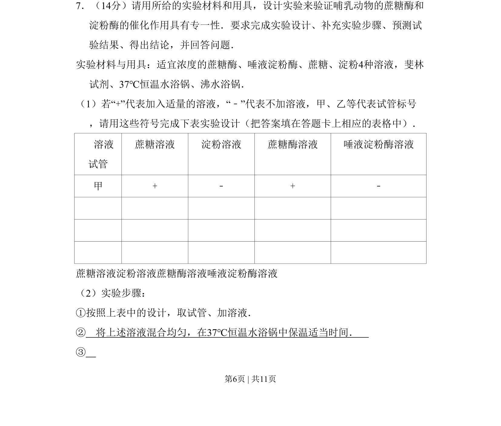
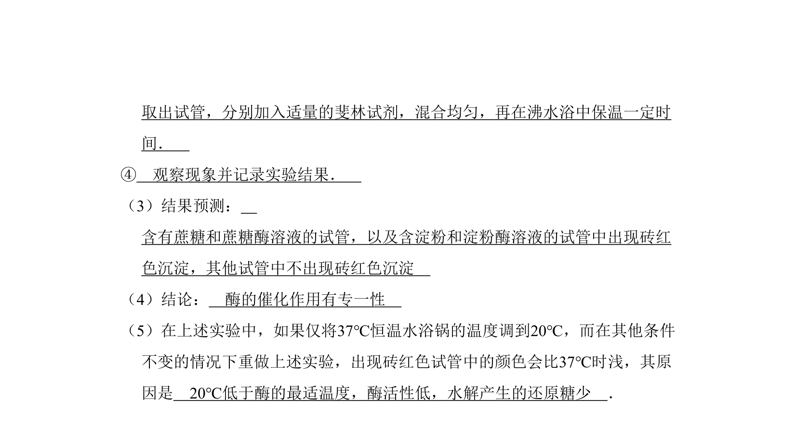
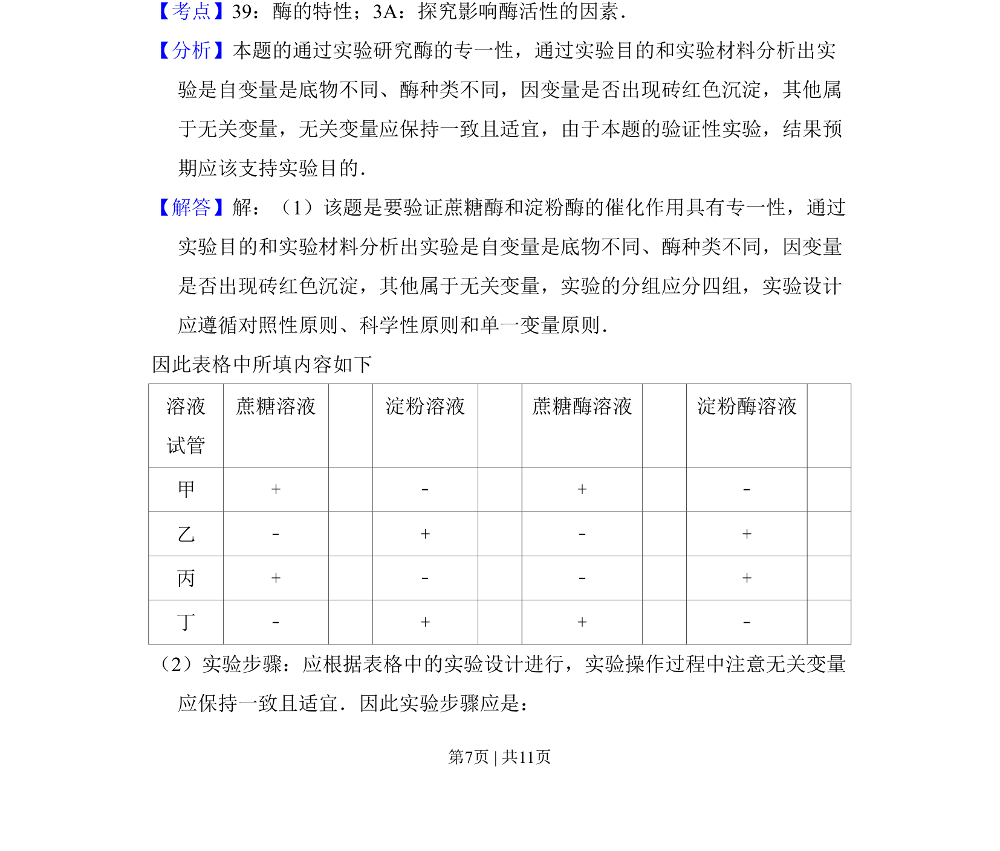
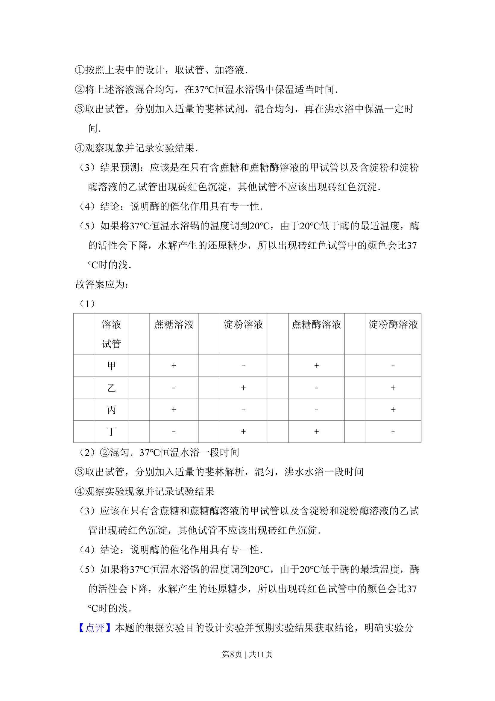
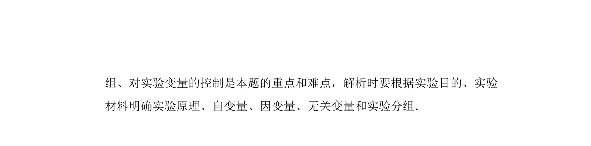

考点：实验设计 对照原则 酶专一性 还原糖检测


该题考查验证酶专一性的实验设计、步骤补充及结果预测，涉及对照设置和斐林试剂使用。



📄 原 PDF 第 6 页：
素材/真题/吉林/2008-2024·（吉林）生物高考真题/2009年高考生物试卷（全国卷Ⅱ）（解析卷）.pdf
7．（14分）请用所给的实验材料和用具，设计实验来验证哺乳动物的蔗糖酶和 淀粉酶的催化作用具有专一性．要求完成实验设计、补充实验步骤、预测试 验结果、得出结论，并回答问题． 实验材料与用具：适宜浓度的蔗糖酶、唾液淀粉酶、蔗糖、淀粉4种溶液，斐林 试剂、37℃恒温水浴锅、沸水浴锅． （1）若“+”代表加入适量的溶液，“﹣”代表不加溶液，甲、乙等代表试管标号 ，请用这些符号完成下表实验设计（把答案填在答题卡上相应的表格中）． 溶液 试管 蔗糖溶液 淀粉溶液 蔗糖酶溶液 唾液淀粉酶溶液 甲 + ﹣ + ﹣ 蔗糖溶液淀粉溶液蔗糖酶溶液唾液淀粉酶溶液 （2）实验步骤： ①按照上表中的设计，取试管、加溶液． ② 将上述溶液混合均匀，在37℃恒温水浴锅中保温适当时间． ③